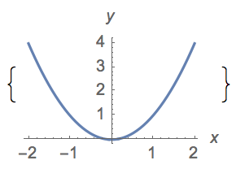

Section 2.2 A lightning introduction to Set Theory
¶Set Theory is one of the most and yet most powerful fields of mathematics, and thousands of books have been written on the subject. In their book written at the beginning of the 20th century, The Principia Mathematica, two mathematicians (Russel and Whitehead) tried to build all of mathematics up from the very most basic principles. It turned out to be a big process, and it was only after almost 400 pages that they could prove that 1+1=2. Here is the last part of that proof:
This might seem completely weird...isn't it obvious that 1+1=2? Well, it certainly makes a lot of sense, but the beauty of mathematics is that we can start from something much simpler than the integers and prove something which, yes, seems basic, but is important to be able to prove.
What is that most basic thing which they start with? Well, it's something called a set. A set can be thought of as a collection of things. In fact, the set that they start with is a very special set called The Empty Set. We denote a set using curly braces, and put all of the things in between these braces, so the empty set is just give by \(\{\}\text{.}\) It's like a bag with nothing in it.
Actually, there is a special symbol for this empty set. We denote it as \(\emptyset\) and we can write:
This is our first example of a definition. It is simply defining the thing on the left to be always given by the thing on the right.
In mathematics a definition is a way to give a name to a mathematical concept.
Here are some more examples of mathematical definitions:
× is defined as the multiplication symbol.
A numerical fraction is defined as an expression of the form \(\frac{a}{b}\) where \(a\) and \(b\) can be any real number but \(b\) cannot be \(0\text{.}\)
A perfect number is a positive integer which is equal to the sum of its proper divisors.
We can see that some of the above definitions involve terms which themselves need to be defined: What is the definition of a real number? What is the definition of a proper divisor? Note also that not all definitions have the word "defined" in them.
A definition is not something that can be proved, because it is simply a statement of the rules of the game. However, we might have a definition which leads to an inconsistency, so we have to be careful with the way that we define things. Note also that we can make temporary definitions in mathematics. For instance, we might say:
{{Let \(L\) be an odd integer greater than 17.}}
This isn't a definition which is used in all of mathematics, but it might be used as part of a mathematical proof.
The definition of \(\emptyset\) is a also a mathematical statement.
In mathematics a statement is something which is either true or false
Let's give some examples of perfectly good mathematical statements:
All even numbers are divisible by 2.
There are four primes which are less than 10.
\(2+1=3\)
\(\cos^2\theta+\sin^2\theta=1\) for all \(\theta\in\mathbb{R}\)
If \(x>10\) then \(x+1>10\)
If \(x+1>10\) then \(x>10\)
150 is the largest prime
Note that not all of these statements were true. That's fine, they don't need to be to be perfectly good mathematical statements.
And finally, the definition of \(\emptyset\) is also an equation.
An equation is a mathematical statement that two mathematical expressions are equal.
Here are some examples of equations:
\(1+1=2\)
\(x^2+2x+1=0\)
\(x+1=x\)
Note that in that last example there is an inconsistency. There are no values of \(x\) for which this is true. However it's still an equation, even if it has no solutions.
We've got to be a bit careful here, as we just used the word "mathematical expression" without defining what this was.
An expression is a combination of numbers and/or mathematical symbols using the defined set of ways in which they are allowed to be combined.
This list of symbols does not include the equality, or inequality symbols. The following are well defined mathematical expressions:
\(1+1\)
\(x^2+2x+1\)
\(x+1\)
\(\frac{\tan x}{\sin \theta}+\int dx\sqrt{\sin(x)+2}\)
Thus, an equation is something which says that two expressions are equal to each other.
Thinking back to the original statements about mathematics as a language, we see that in a mathematical expression or statement some symbols are a bit like nouns and others like verbs. An equal sign is like the verb "to be", a fraction is a command to do something with the things above and below the line. A multiplication is an action between symbols. The nouns are the numbers, and variables - the 2, the \(x\text{,}\) the \(\theta\text{,}\) etc. In this mathematical realm a statement is a whole sentence explaining exactly what is going on.
A moment ago we came across another type of mathematical statement:
This is a statement known as an identity. It is an identity because it is said to be identically true for any value of \(\theta\text{.}\)
An identity is an equation which is always true for any values of the unknowns (often within some specified range.
Some more identities might be:
\((a+b)^2=a^2+b^2+2ab\)
\(e^{i\pi}+1=0\)
\(\left( \begin{array}{c} n \\ k \end{array} \right)=\left( \begin{array}{c} 2 n-2 \\ 2 k-1 \end{array} \right)\) for positive integers \(n\) and \(k\) where \(n\ge k\)
As you can see, the identity might only be true within some specific subset of ALL possible values. For instance, in the last example, it's not true for ALL \(n\) and \(k\) but it's an identity for the infinite set of those specified.
An identity is different from an equation of the form:
which isn't true for all \(x\text{.}\) In fact it's true only for two values of \(x\) in this case.
As a next exercise, say which of the following are Definitions, Expressions, Equations, Identities, Statements. Remember that one may be several of these.
.....still to come.....
Subsection 2.2.1 Back to sets!
Where were we? We just defined the empty set \(\emptyset\) and suddenly got carried away with all of our definitions (including the definition of a definition). We actually wanted to do some maths, right?
So, so far we have the equivalent of an empty bag: \(\emptyset\text{.}\) It is a collection of things, except there are no things in this collection. Our first non-trivial set is going to be a set with one thing in it. We could put a number in, or letter, or a graph, or your friend Kabelo. These are going to be denoted:
\(\{42\}\)
\(\{a\}\)
Figure 2.2.2. \(\{Kabelo\}\)
Each of these is a perfectly good set. Generally when we introduce a set we will give it a name. We could say:
Let \(A=\{a\}\text{.}\)
Which means let's define a new thing "A" and it's going to be defined as a set with one thing in it which is the letter \(a\text{.}\) We say that \(a\) is an element of the set \(A\text{.}\) In fact in this case it's the only element. We write "\(a\) is an element of \(A\)" as:
Let's look at a set with more than one element in i:
Let \(B=\{a,b,c\}\text{.}\)
Which is a new set \(B\) which has three elements in, \(a\text{,}\) \(b\text{,}\) and \(c\text{.}\) So we could write, for instance \(c\in B\text{.}\) Now comes the first important point about sets. The order of the things in the set doesn't matter. We say that the elements of a set are unordered, so:
The symbol (\(\equiv\)) in between the two just means "equivalent to". So it says that the thing on the left and on the right are equivalent (which you can think of as the same in this context). In fact you could write the letters in any order you like and it's still the same set.
Another really important idea is that a thing either is in a set, or it's not. It can't be in their multiple times (or half a time). So \(\{a,a\}\) doesn't make much sense as a set. Once \(a\) is in there, it can't be MORE in there. We say that the elements of a set are distinct
So, we've got here some really small sets, but in fact you already know some sets, which are not only not small, but not even finite. A finite set is a set which has a finite number of things (as all the sets above do, even if that number is zero). There are some well-known sets with an infinite number of elements. For instance, the integers is a well defined set with an infinite number of elements in. This is such an important set that ew give it a special letter of its own: \(\mathbb{Z}\text{.}\) Actually, here is a list of the basic infinite sets you may or may not have already come across:
\(\mathbb{N}\) - set of natural numbers
\(\mathbb{Z}\) - set of integers
\(\mathbb{Q}\) - set of rational numbers
\(\mathbb{R}\) - set of real numbers
\(\mathbb{C}\) - set of complex numbers (we will look at complex numbers in the second semester)
We can take these sets and make sets with only some of the elements in these. What if you wanted to make a set of the even integers. In words you might say "All integers of the form \(2k\) where \(k\) is an integer. There's a way of writing this set. We write:
Let's break this down. This is a set. The elements of it are all of those elements in \(\mathbb{Z}\) (denoted by \(x\in\mathbb{Z}\)), such that (this is denoted by the vertical line, "|") the element is of the form \(2k\text{,}\) where \(k\) is itself an integer.
The set of odd integers could thus be written:
Do you see why, for either of the last two examples we could have said \(x\in\mathbb{R}\) rather than \(x\in\mathbb{R}\text{.}\)
Now can you start to see something about the language of mathematics? We can write it all down, or we can write it in the form of the expression which is much shorter. But to understand it you have to know how to read the language.
The general form for writing a set like this is:
where \(P(x)\) is some property we want to be true. It is some mathematical statement about the elements which are in \(x\) and can be thought of as a constraint on the set that you are building from the set \(X\text{.}\)
We can think of it like this:
Start with the set \(X\text{.}\)
For every elements \(x\) in \(X\text{,}\) test if it satisfies the property \(P(x)\text{.}\)
If it does, it's in the set that we're trying to create.
We're so far figuring out how we can define a language to describe sets, but we can't yet do much with these sets. One thing which tends to be very useful in mathematics is to be able to compare two objects. With sets we can see if the elements in one set are all in another. We say:
Definition: A set \(S\) is said to be a subset of a set \(A\text{,}\) written as \(S\subseteq A\text{,}\) if each element of \(S\) is an element of \(A\text{.}\)
It might actually be that not only is every element of set \(S\) in the set \(A\text{,}\) but every element of the set \(A\) is in \(S\text{.}\) If this is the case then the sets must be the same things, and we can write \(S=A\text{.}\) If it's not the case then we say that \(S\) is a proper subset of \(A\) which rules out that they may be the same. We write this as:
Note the difference between \(\subset\) and \(\subseteq\)
Do you see the parallel with \(x\lt y\text{,}\) \(x\le y\) when \(x\in\mathbb{R}\) and \(y\in\mathbb{R}\) (ie. when \(x\) and \(y\) are real numbers.
So, given \(X=\{a,b,c\}\text{,}\) \(Y=\{a,b\}\text{,}\) \(Z=\{a,b,c\}\text{.}\) We can write:
(note that we could also have written \(Y\subset Z\subseteq X\text{,}\) or \(Y\subset X=Z\text{.}\) All of these would be true statements). We could also write:
which just says that \(X\) is not a subset of \(Y\text{.}\)
A statement about whether one set is a subset of another is an inclusion. We can write down the inclusion for the infinite sets that we wrote down before. In fact we have that:
In fact here we have a case of a new type of mathematical language: a relation. We are actually not going to define a relation here as we need a bit more machinery to make sense of a relation, but we can give some examples.
The greater than sign \(>\) takes in two values, \(a\) and \(b\) \(\in\mathbb{R}\text{.}\) ie \(a>b\text{.}\) If \(a\) is greater than \(b\) then we say that \((a,b)\) are in the relation \(>\text{.}\) We can think of this as asking for which pairs of values is \(a>b\text{?}\) \(>\) is a relation on real numbers.
We can do the same thing with \(=\text{.}\) In this case, pairs of real numbers \((a,a)\) are in the relation "equal to".
We can have sets of numbers, like \((4,2)\text{,}\) \((9,3)\text{,}\) \((16,4)\text{.}\) These pairs of numbers are in the \(\sqrt{\,}\) relation, because for \((a,b)\text{,}\) \(\sqrt{a}=b\) for all of these pairs.
Note that in the above list, when we talk about \((a,b)\) this is not a set. In this case the order does matter, and we can have the same element twice.
You might have thought that there were more integers than there are even numbers (because the integers contains both even and odd numbers)...but you'd be wrong!!! Something very strange happens with infinite sets, and it turns out that the integers and the even numbers are called countably infinite sets which are of the same size. In fact this can be proved very simply and leads to some really weird ideas. Hilbert's Hotel is one of them.
Hilbert's hotel has an infinite number of rooms (all numbered) and an infinite number of guests, one in each room. A new guest comes along and asks for a room. The manager (Dr Hilbert) beams and says, but of course! We just need to do a little rearrangement. He asks the person who is in room 1 to move to room 2, the person who is in room 2 to move to room 3, the person who is in room \(n\) to move to room \(n+1\text{,}\) etc.. He gives the guest the key to room 1 and bids him a good night's sleep.
The next day a bus arrives. This bus has an infinite number of people in. It's a tour group. The tour group manager comes to speak with Dr Hilbert and asks, with a worried expression, if there is room for everyone. Dr Hilbert grins again and says, but of course! He asks the person who is in room 1 to move to room 2, the person who is in room 2 to move into room 4, the person who is in room \(n\) to move to room \(2n\) etc. He then gives the keys to all the odd numbered rooms to the tour group manager and wishes the infinite number of new guests a good night's sleep.
It turns out that this madness can go on much further, with infinite numbers of busses, and infinite numbers of boats with infinite numbers of busses, but I hope you see that infinities don't just work like really big numbers. They are fundamentally different....and super weird!
So far we're not really doing maths. We're just naming things. In order to do maths we need some operations.
In mathematics an operation is something which takes in zero or more mathematical objects and outputs a mathematical object.
Some examples of operations are:
Multiplication is an operation which takes in two numbers outputs another.
The square root is an operation which takes in one number and outputs another.
We could take a graph and find the area under the graph. This would be an operation on the mathematical object which describes the graph. The output is a real number.
The first operation on sets is the set equivalent of addition. It is called the union operation and is written \(\cup\)
Subsubsection 2.2.1.1 Set Theory and Logic questions
This section is by Siphelele
Subsection 2.2.2 Introduction to Sets and Set Operations
Provide the definition of a set.
-
Write each of the following sets by listing their elements between braces.
\(\{x\in \mathbb{Z}|-2\leq x\leq 7\}\)
\(\{x\in \mathbb{R}|x^2+4x=-6\}\)
\(\{x\in \mathbb{N}|x^3+5x^2=-6x\}\)
\(\{x\in \mathbb{R}|\sin \pi x=0\}\)
\(\{6a+2b|a,b\in \mathbb{Z}\}\)
-
Write each of the following sets in set builder notation.
\(\{-4,-3,-2,-1,0,1,2,3,4\}\)
\(\{1,2,3,4,\cdots\}\)
\(\{\cdots -\pi ,-\pi/2,0,\pi/2,\pi,3\pi/2,2\pi,\cdots\}\)
\(\{\cdots,3/2,-3/4,0,3/4,3/2,9/4,3,15/4,9/2,\cdots\}\)
\(\{3,6,11,18,27,38,\dots\}\)
-
Sketch the following points in the \(xy\)-plane.
\(\{(x,y)|x\in [1,2],y\in [3,4]\}\)
\(\{(x,x^2)|x\in\mathbb{R}\}\)
\(\{(x,y)|x,y\in \mathbb{R},\,x^2+y^2\leq 1\}\)
\(\{(x,y)|x,y\in \mathbb{R},\,y\geq x^2-1\}\)
\(\{(x,x+y)|x\in \mathbb{R},y\in \mathbb{Z} )\}\)
\(\{(x,y)|x,y\in \mathbb{R}|(x-y)(y+x)=0\}\)
Define a subset \(B\) of some given set \(A\text{.}\)
-
Write for each of the following subsets all possible subsets.
\(\{a,b,c\}\)
\(\{\emptyset\}\text{,}\) \(\{\{\emptyset\}\}\) and \(\{\emptyset,\{\emptyset\}\}\)
\(\{x\in \mathbb{Z}|0\leq x\leq 5\}\)
Given two sets \(A\) and \(B\text{,}\) define the complement of each set. Proceed to define what an intersection, union and difference of two sets is.
-
Let \(U=\{i|i\in \mathbb{N}\cup \{0\},\,0\leq i\leq 8\},\, A=\{0,2,4,6,7\},\,B=\{1,3,5,7\}\text{.}\)
\(A^c\text{,}\) \(B^c\)
\(A\cup A^c\)
\(A^c\cap B^c\)
\(A\cup B\)
\((A\cup B)^c\)
\((A\cap A^c)\)
\(A\backslash B\)
\(A\backslash B^c\)
Subsubsection 2.2.2.1 Introduction to Mathematical Arguments
Let \(A,B, C\) be sets and let \(U\) be the universal set.
Show that for any set \(A\text{,}\) \(A\subseteq \emptyset\) implies that \(A=\emptyset\)
Show that for any set \(B\text{,}\) \(B\cap B^c=\emptyset\)
Prove that \(A\cup B=B\cup A\) and that \((A\cup B)\cup C=A\cup (B\cup C)\text{.}\) Are these true if we replace \(\cup\) with \(\cap\text{?}\)
Prove that \(A\cup (B\cap C)=(A\cup B)\cap (A\cup C)\) and \(A\cap (B\cup C)=(A\cap B)\cup (A\cap C)\text{.}\)
Prove that \(U\backslash(A\cup B)=(U\backslash A)\cap (U\backslash B)\) and that \(U\backslash (A\cap B)=(U\backslash A)\cup(U\backslash B)\)
Let \(\mathcal{A}\) be a collection of sets and \(U\) be the usual universal set. Prove that \(U\backslash(\cup \mathcal{A}) =\cap \{U\backslash A|A\in \mathcal{A}\}\) and that \((U\backslash\cap \mathcal{A})=\cup \{U\backslash A|A\in \mathcal{A}\}\)
-
Prove the following:
\(\mathcal{P}(A\cap B)=\mathcal{P}(A)\cap \mathcal{P}(B)\)
\(\mathcal{P}(A\cup B)\supset \mathcal{P}(A)\cup \mathcal{P}(B)\text{.}\) Give an example to show why \(\subseteq\) fails.
\(\mathcal{P}(A\backslash B)\backslash \{\emptyset\}\subset \mathcal{P}(A)\backslash \mathcal{P}(B)\)
Let \(A=\{X|X \text{ is a set and } X\notin X\}\) . Read this definition carefully until you can find a way to describe the set \(A\) in English (without using symbols). Answer the following questions: Is \(A\in A\text{?}\) Is \(A\notin A\text{?}\) Are you noticing anything strange about this set from the answers of these questions? If you are not shocked at this stage, you need to think deeply about your previous answers.
-
Let P,Q be true statements. As a warm up, draw the truth tables for the following.
\(\neg P\text{,}\) \(P\vee Q\text{,}\) \(P\wedge Q\) and \(P\implies Q\)
-
Let \(P, Q, R\) and show that the following are true.
\(P\vee Q\iff Q\vee P\)
\(P\wedge (Q\vee R)\iff (P\wedge Q)\vee (P\wedge R)\)
\(P\vee (Q\wedge R)\iff (Q\vee)\wedge(\vee)\)
\(P\wedge P\iff P\)
-
Let \(Q, P, R, S\) be statements. Show that the following are true.
\(\neg (P\vee Q)\iff \neg P\wedge \neg Q\)
\(\neg(P\wedge Q)\iff \neg P\vee \neg Q\)
\((P\implies Q)\iff \neg (P\wedge \neg Q)\)
\([P\wedge (P\vee Q)]\implies Q\)
\([(P\vee Q)\wedge \neg P]\implies P\)
\([(P\implies Q)\wedge(R\implies Q)]\iff [(P\wedge R)\implies Q]\)
\([(P\implies Q)\wedge(P\implies R)]\iff [P\implies (Q\wedge R)]\)
If \(Q\iff R\text{,}\) then \((P\implies Q)\iff (P\implies R)\)
-
If \(P\implies Q\text{,}\) \(R\implies S\text{,}\) then
\(P\vee R\implies Q\vee S\)
\(P\wedge R\implies Q\wedge S\)